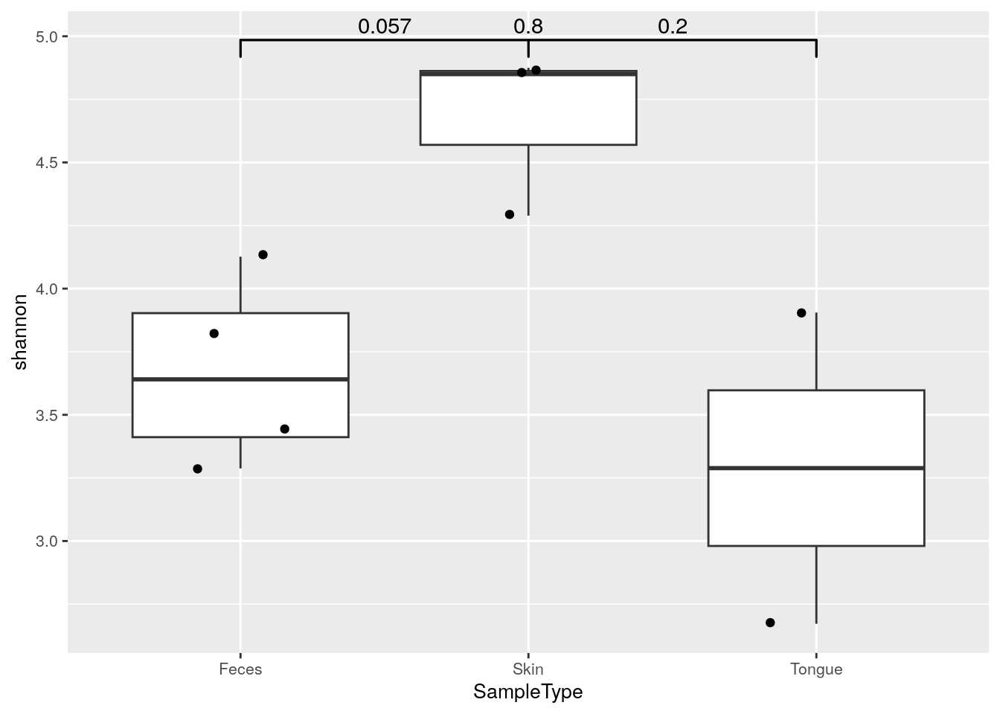
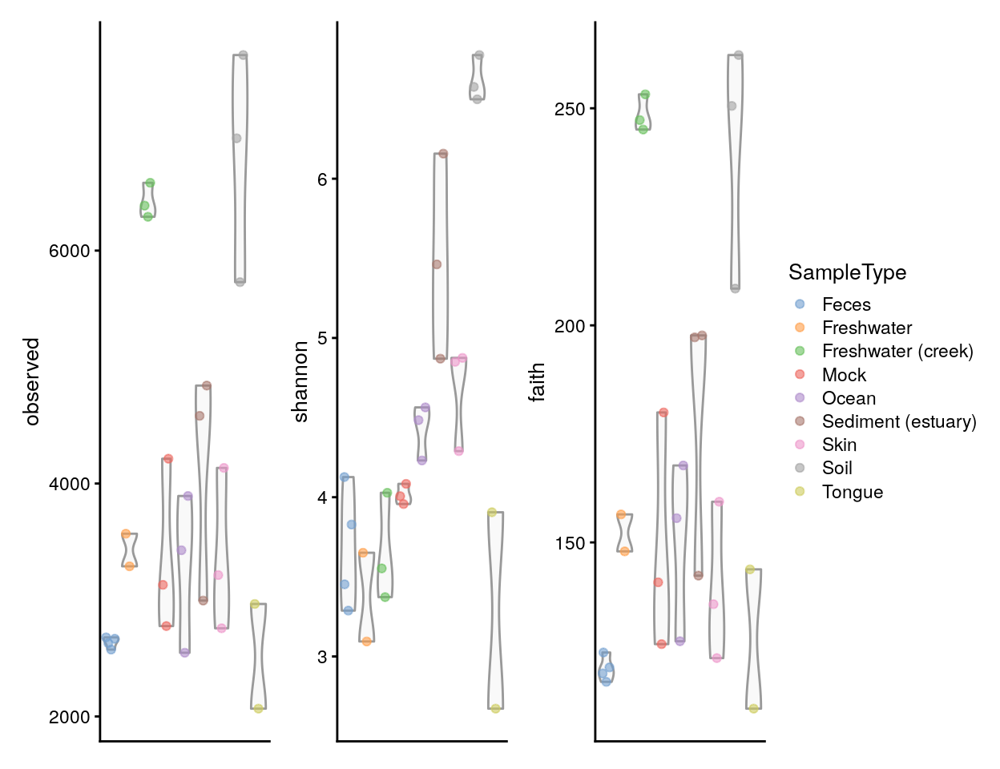

6 Community Diversity
Community diversity is a central concept in microbiome research. A number of diversity indices are available in ecological literature.
The main categories of diversity indices include species richness, evenness, and diversity; each of them emphasizes different aspects of the community heterogeneity (Whittaker 1960), (Willis 2019). The Hill coefficient combines many standard indices into a single equation that provides observed richness, inverse Simpson, Shannon diversity, and generalized diversity as special cases, with varying levels of emphasis on species abundance values. Thus, the term alpha diversity is often used to refer collectively to all these variants.
Diversity (estimateDiversity), summarizes the distribution of species abundances in a given sample into a single number that depends on both species richness and evenness (see below). Diversity indices measure the overall community heterogeneity that considers both of these aspects simultaneously. A number of ecological diversity measures are available. In general, diversity increases together with increasing richness and evenness. Phylogenetic diversity (PD), (Faith 1992) is a variant that incorporates information from phylogenetic relationships between species, unlike most other commonly used diversity indices. The estimateDiversity function uses a faster re-implementation of the widely used function in picante W et al. (2010). The method uses the default rowTree from the TreeSummarizedExperiment object (tse).
Richness (estimateRichness) refers to the total number of species in a community (sample). The simplest richness index is the number of species observed in a sample (observed richness). Assuming limited sampling from the community, however, this may underestimate the true species richness. Several estimators have been developed to address this, including for instance ACE (A and SM 1992) and Chao1 (A 1984) indices. Richness estimates do not aim to characterize variations in species abundances.
Evenness (estimateEvenness) focuses on the distribution of species abundances, and it can thus complement the number of species. Pielou’s evenness is a commonly used index, obtained by normalizing Shannon diversity by (the natural logarithm of) observed richness.
These main classes of alpha diversity are sometimes complemented by indices of dominance or rarity:
Dominance (estimateDominance) indices are in general negatively correlated with alpha diversity. A high dominance is obtained when one or few species have a high share of the total species abundance in the community. Note that dominance indices are generally inversely correlated with other alpha diversity indices.
Rarity (estimateRarity) indices characterize the concentration of species at low abundance. Prevalence and detection thresholds determine rare species whose total concentration will determine the value of a rarity index.
6.1 Alpha diversity estimation in practice
Alpha diversity can be estimated with wrapper functions that interact with other packages implementing the calculation, such as vegan (Oksanen et al. 2020).
These functions calculate the given indices, and add them to the colData slot of the SummarizedExperiment object with the given name.
The estimated values can then be retrieved and analyzed directly from the colData, for example by plotting them using plotColData from the scater package (McCarthy et al. 2020). Here, we use the observed species as a measure of richness.
# Let us first load some example data.
library(mia)
data("GlobalPatterns", package="mia")
tse <- GlobalPatterns
# Estimate (observed) richness
tse <- mia::estimateRichness(tse,
assay.type = "counts",
index = "observed",
name="observed")
# Check some of the first values in colData
head(tse$observed)
## CL3 CC1 SV1 M31Fcsw M11Fcsw M31Plmr
## 6964 7679 5729 2667 2574 3214Let us visualize results against selected colData variables (sample type and final barcode).
library(scater)
plotColData(tse,
"observed",
"SampleType",
colour_by = "Final_Barcode") +
theme(axis.text.x = element_text(angle=45,hjust=1)) +
labs(expression(Richness[Observed]))6.1.1 Diversity
The main function, estimateDiversity, calculates the selected diversity index based on the selected assay data.
tse <- mia::estimateDiversity(tse,
assay.type = "counts",
index = "shannon",
name = "shannon")
head(tse$shannon)
## CL3 CC1 SV1 M31Fcsw M11Fcsw M31Plmr
## 6.577 6.777 6.498 3.828 3.288 4.289Alpha diversities can be visualized with boxplot. Here, Shannon index is compared between different sample type groups. Individual data points are visualized by plotting them as points with geom_jitter.
geom_signif is used to test whether these differences are statistically significant. It adds p-values to plot.
library(ggsignif)
library(ggplot2)
library(patchwork)
# Subsets the data. Takes only those samples that are from feces, skin, or tongue,
# and creates data frame from the collected data
df <- as.data.frame(colData(tse)[tse$SampleType %in%
c("Feces", "Skin", "Tongue"), ])
# Changes old levels with new levels
df$SampleType <- factor(df$SampleType)
# For significance testing, all different combinations are determined
comb <- split(t(combn(levels(df$SampleType), 2)),
seq(nrow(t(combn(levels(df$SampleType), 2)))))
ggplot(df, aes(x = SampleType, y = shannon)) +
# Outliers are removed, because otherwise each
# data point would be plotted twice;
# as an outlier of boxplot and as a point of dotplot.
geom_boxplot(outlier.shape = NA) +
geom_jitter(width = 0.2) +
geom_signif(comparisons = comb, map_signif_level = FALSE,
correction="fdr") + #corrects the p-values
theme(text = element_text(size = 10))
6.1.2 Faith phylogenetic diversity
The Faith index is returned by the function estimateFaith.
tse <- mia::estimateFaith(tse,
assay.type = "counts")
head(tse$faith)
## [1] 250.5 262.3 208.5 117.9 119.8 135.8Note: because tse is a TreeSummarizedExperiment object, its phylogenetic tree is used by default. However, the optional argument tree must be provided if tse does not contain one.
Below a visual comparison between shannon and faith indices is shown with a violin plot.
plots <- lapply(c("shannon", "faith"),
plotColData,
object = tse, colour_by = "SampleType")
plots[[1]] + plots[[2]] +
plot_layout(guides = "collect")Alternatively, the phylogenetic diversity can be calculated by mia::estimateDiversity. This is a faster re-implementation of
the widely used function in picante W et al. (2010).
Load picante R package and get the phylo stored in rowTree.
tse <- mia::estimateDiversity(tse,
assay.type = "counts",
index = c("shannon", "faith"),
name = c("shannon", "faith"))Scatterplot for the estimated Shannon and Faith indices across samples.
ggplot(colData(tse), aes(x=shannon, y=faith)) +
geom_point() +
labs(x="Shannon index", y="Faith (phylogenetic) index")6.1.3 Alpha diversity measures and sample grouping
Let us visualize results from all alpha diversity measures calculated above against a given sample grouping available in colData (here, sample type). These have been readily stored in the colData slot, and they are thus directly available for plotting.
library(patchwork)
# Create the plots
plots <- lapply(c("observed", "shannon", "faith"),
plotColData,
object = tse,
x = "SampleType",
colour_by = "SampleType")
# Fine-tune visual appearance
plots <- lapply(plots, "+",
theme(axis.text.x = element_blank(),
axis.title.x = element_blank(),
axis.ticks.x = element_blank()))
# Plot the figures
(plots[[1]] | plots[[2]] | plots[[3]]) +
plot_layout(guides = "collect")
6.1.4 Visualizing significance in group-wise comparisons
Let us next compare Shannon index between sample groups using the standard ggplot tools, and illustrate individual data points with geom_jitter.
The geom_signif function provides tools to test whether these differences are statistically significant; the function adds (adjusted) p-values in the plot.
library(ggsignif)
library(ggplot2)
# Determine the different combinations for significance testing
comb <- split(t(combn(levels(tse$SampleType), 2)),
seq(nrow(t(combn(levels(tse$SampleType), 2)))))
ggplot(colData(tse), aes(x = SampleType, y = shannon)) +
# Outliers are removed, because otherwise each
# data point would be plotted twice;
# as an outlier of boxplot and as a point of dotplot.
geom_boxplot(outlier.shape = NA) +
geom_jitter(width = 0.2) +
geom_signif(comparisons = comb,
map_signif_level = FALSE,
correction="fdr") + #corrects the p-values
theme(text = element_text(size = 10))The ggpubr package provides further flexibility for estimating and highlighting the significances.